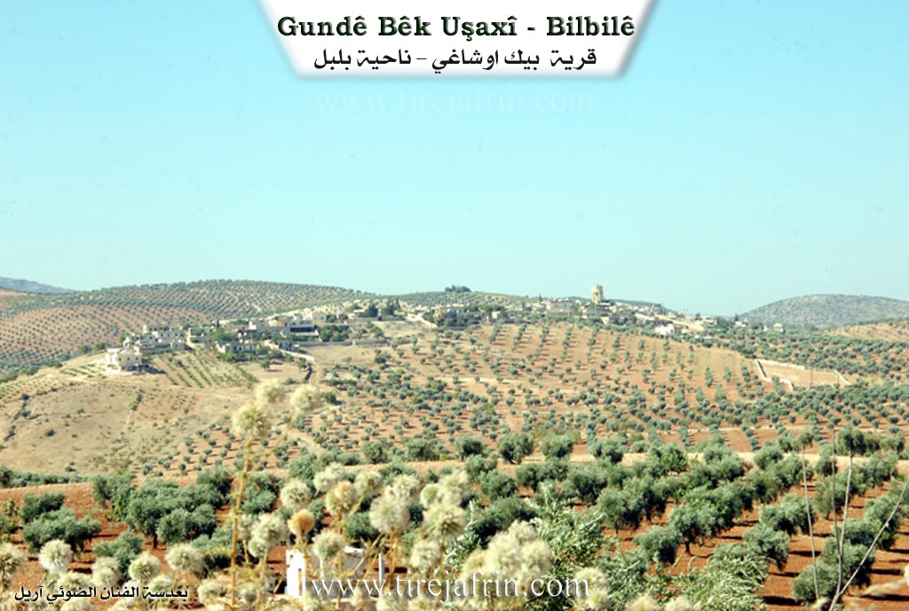
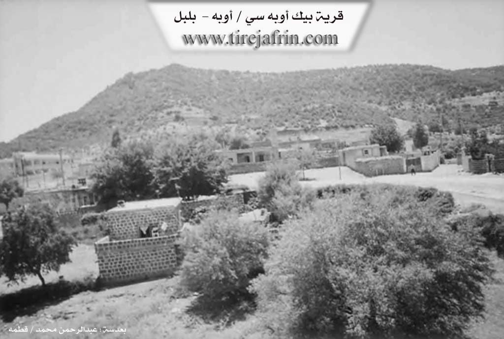

General Information
Nahiya (Subdistrict)
Bilbilê
Also Known As
Beg Oba Si, Bêkê, Bîkê, Oba, أوبه, بك أوبه سي, بيكه
Tribes
Biyan
Families, Clans, etc.
Malbata Dindin, Malbata Şêx Ismaîl, Malbatî Xelîl Şivan, Malbatî Xidir, Malbatî Ça'beqo, Malî Elî Hesen, Malî Husênê Dêlê, Malî Kudi, Malî Kuju, Malî Mirîd, Malî Mıho, Malî Qasu, Malî Qumuş, Malî Çeleng, Malî Şêx Musler, Mihemedê Xidir

Photos


Basic Information about Bêkê
Source: Ax û Welat
Hills: Tila Tîlo
Other Landmarks: Korta Hêro, Erdê Pêşnê, Mîdanek Beze
Summaries
I. Summary from TirejAfrin Site (English) of Bêkê
According to the book 'جبل الكرد' / 'Mountain of the Kurds' / Geographic Study:
Gundî Bêkê (گندی بێکێ), بك أوبه سي (Beg Oba Si), أوبه (Oba) /1151N – 345ha - 8km - 1000m/:
- The village name means "village of the Bey," and the Turks called it Beg Obesi "community of the Bey," which was owned by the followers of Sheikh Ismail (الشيخ إسماعيل). Sharfkhan (شرفخان) mentions the name "Bîkan" (بيكان) among the Kurdish tribes in Botan (/Lirikh, p.48/). The Arabized name "أوبه" (Oba) means community in Turkish and Kurdish.
- A small village located on the northern slope of the "Girê Çûçik" (گرێ چووچک) mountain rich in oak groves. It is 1km from the Turkish border and has a border police station and some beautiful villas.
According to the book Afrin... Her River and Green Hills:
بك اوبه سي (Beg Oba Si) - أوبه (Oba): A village in Kurdish Mountain (جبل الكرد), belonging to Bulbul District (ناحية بلبل), Afrin (منطقة عفرين), Aleppo Governorate (محافظة حلب).
It is a small village located above the northern slope of the small limestone Damir Bek (داميربك) mountain (Girê Çûçik گرێ چووچک), on a rocky plateau rich in oak groves about 6km northwest of Bilbil (بلبل) town, 1km south of the Turkish border.
It is bordered to the north by a mountain slope planted with trees and the Turkish border 1km away, to the south by a high mountain chain planted with oak and beech forest trees and "Baqjah Qonaq" (باقجة قوناق) village, to the west by a mountain chain and rugged terrain and "Shankil" (شنكل) village, and to the east by a mountain slope and the villages of Za'reh (زعره) and Alikarli (عليكارلي) and the Turkish border.
The village has 25 houses and is about 400 years old. The old houses are stone and mud with flat wooden roofs, while the modern ones are cement. It has an electricity network and a modern mosque in the center of the village and a border station. The village drinks from a network that gets its water from springs west of the village, and there is a water spring on the western side used for personal purposes. It is connected to Bilbil (بلبل) town by a paved road that passes through its center to Meydan Akbas (ميدان اكبس) town.
The residents work in rainfed agriculture on an area of 345 hectares growing olives, grains, legumes, and vineyards, in addition to raising sheep and goats. Some of them work in making wood charcoal from oak groves. Among its most important families are the Haj Hanan Sheikh Ismail Zadeh (حج حنان شيخ إسماعيل زادة) family and the lawyer "Mohammed Manan Sheikh Ismail Zadeh" (محمد منان شيخ إسماعيل زادة) family, who were the first to inhabit the village since ancient times. The presence of an old house (Qonaq قوناق) in the center of the village belonging to Haj Hanan Sheikh Ismail Zadeh (حج حنان شيخ إسماعيل زادة) indicates this.
Village Head: Mustafa Sheikho Mohammed (مصطفى شيخو محمد)
II. Summary of Bêkê from Ax û Welat
Source: https://www.youtube.com/watch?v=Uon3TY0_dxI
This documentary focuses on the oral history and cultural heritage of a village in the Afrin region, identified in traditional song as Gundê Bîkê. The narrative is driven by Mihemedê Xidir, a local dengbêj (bard) who recounts his family’s migration history and the preservation of Kurdish folklore. The village is characterized by its deep connection to the dengbêj tradition, with the interviewee noting that his father and grandfather were also bards, though they never professionally recorded their songs on cassettes.
History and Migration
The history of the residents is defined by migration. Mihemedê Xidir explains that his grandfather, whose name he bears, originally came from Mûş in Kurdistana Bakur (North Kurdistan) and settled in the current village. The family did not stay stationary; approximately 70 years prior to the interview, his father moved the family from the village to a place called Mîdanek Beze. In 1954, the family relocated again to Şingêl.
Economic and personal circumstances drove further movement. In 1969, Mihemedê Xidir moved to Heleb (Aleppo). He remained there for decades until the year 2000, when he fell ill. Following a doctor's advice that the city environment was detrimental to his health, he returned to the village. He credits the fresh air and environment of the village with his recovery.
Social Structure and Cultural Life
The primary lineage mentioned is the Mihemedê Xidir family. The preservation of history in the village is oral; Mihemedê Xidir notes that while they do not write books, they do record significant local events—such as when a notable person ("agha") visits, a marriage occurs, or a death happens—by writing down the date to keep a chronicle of the village's timeline.
The village's cultural repertoire includes famous Kurdish epics. Mihemedê Xidir recites parts of stories involving Erebê Mela and Derwêş, and mentions knowing the cycles of Memê Alan and Surmelî Memed Paşa Berazî. He emphasizes that he learned these strictly through oral transmission from his father, likening his listening process to a student studying books.
Landmarks and Geography
While the first half of the transcript features an epic legend set in places like Vilayeta Rihayê and Deşta 'Anê, the final song provides specific topographical details about Gundê Bîkê itself. The song describes the village as being foggy ("bi mij e") and mentions specific local features. These include Korta Hêro, which appears to be a valley or depression, and Erdê Pêşnê. The song also references Tila Tîlo, a hill or elevation associated with the area. The mention of Mîdanek Beze as a former residence indicates it is a locality in the near vicinity of the village.
II. Summary of Bêkê from Ax û Welat 2
Source: https://www.youtube.com/watch?v=sbNTmNg4Qus
The village of Bêkê, located in the Bilbilê district of the Çiyayê Kurmênc (Afrin) region, sits directly on the border between Syria and Turkey. The village is historically significant for its connections to the Biyan tribe, a large confederation that includes neighboring villages such as Şingêl, Kurzêlê, and Dêlê Osman. According to local elders, the village name derives from "Bêg" (Bey/Lord) or from an original settler named Bîkê. The settlement was formerly known as Xirabê Bîk. The first family to settle there was Malbata Şêx Ismaîl, followed by Malbata Dindin, though no descendants of the original founder remain. The current residents trace their lineage to aghas who migrated from Qûca and previously resided near Dêl Osman.
The social structure is defined by the Biyan tribe, encompassing approximately twelve to thirteen families, including Malî Mıho, Malî Elî Hesen, Malî Şêx Musler, and Malbatî Xidir. The village has produced notable historical figures, including parliamentarians like Faîq Axa, Ehmed Zemçî, and Şêx Hec Mihemed who represented the region in the 1950s. Other prominent figures include the revolutionary Hecî Henan, who led attacks against French forces at Hesarkê, and the religious scholar Hecî Elî Mela, known for writing a Kurdish Mevlid.
Religious and cultural life in Bêkê centers around several sacred sites. The most prominent is the shrine of Yoxmirê (also referred to as Yaxmûrê Serîgir). Elders describe a rain prayer ritual performed here during droughts, where villagers would clean a nearby pool, feast, and throw white stones into the water to summon rain. Another shrine, Zîyaretê Gir, is located on a hill. The village is also home to distinct landmarks such as Tayê Bûkê (The Bride's Branch/Tree) and Dara Ayşê, a tree planted by the mother of Hecî Henîf.
In 1966, a significant community effort brought water into the village center from springs like Kaniya Seîbê, Kaniya Kûlayî, and Kaniya Mala. This era also saw the construction of a mosque and the formalization of the settlement sometimes referred to as Erebwêranê or Kaniya Sehba in administrative contexts. The village is known for its black stone architecture and its rich oral traditions, preserved by local dengbêjs (bards) like Mihemed Xidir, who chronicles local history and sings traditional epics. The community has been affected by the border division, which separated them from their kin and lands in the north, and more recently by conflicts involving the Turkish army at sites like Şêx Hemze.
II. Ax û Walat Book 2
BÎKÊ
13.10.2017
The village of Bîkê is affiliated with the Bilbilê district of the Efrînê canton, 7 km northwest of the town of Bilbilê and 50 km from the city of Efrînê.
The name of the village comes from the name of the first person who settled in the village, named (Bîkê), but now no one from this family remains. Previously, the village was known by the name ((Xirabê Bîkê)) (The Ruins of Bîkê).
The family of Şêx Sim’el was the first family to settle in the village, followed by other families:
There are 12 families in the village:
The families of Şêx Sim’el, Şêxmûs, Çavbeq, Murad, Qaso, Miho, Çiling, Xidir, Qumiş, Elî Hesen, Hisênê Delî, and the Kijo family.
98
All these families were from outside the village, from the villages of Heyama, Bêxçe, Qoca of the border area, Keferdizê, Elî Kera, and the village of Meydana.
To the north of the village lies the border of North Kurdistan; to the east are the Elbîskê valley, the Çinarê valley, and the two villages of Elîkera and Ze’rê; to the south are Gir mountain, the villages of Bêxçe, Xilalka, Elî Begê, and Si’riya; and to the west are Qeleciq mountain, the Enedî valley, the Kincan valley, gaza Elî, Benkevirê, and the two villages of Şingêlê and Meydana.
The area around the village is famous for its black stone, and the village buildings are constructed with this stone because it is durable and colorful.
It is worth mentioning that this village served as a border gate between Rojava and North Kurdistan during the years 2014–2015.
The people of the village make their living from agriculture, cultivating olive fields, cherries, grapes, apples, and vegetables.
99
Some families raise sheep and goats. 5 people work in various factories in Bilbilê and Meydana, and nearly 10 people work in the institutions and bodies of the Autonomous Administration.
Nearly 90 houses and around 500 people live in the village.
There are 3 martyrs from the village:
Martyr Kemîran, Derwîş, and Martyr Dawûd
The village school is named after Martyr Birûsk, and the village commune is named after Martyr Mezlûm Qendîl.
Hec Henan formed a military brigade in 1948 and fought against the Israeli army in Palestine.
Fayiq Axa was a member of the Syrian parliament in the 1950s as a representative of Çiyayê Kurmênc, and also Ehmed Zemçî and Şêxo Hec Mihemed were members of parliament many times.
Hec Elî Mile Elî was a teacher and an Islamic cleric. He wrote a book of Mawlids in Kurdish and worked as an employee in Efrînê.
Cemîl Mile Elî was a lawyer and the head of the lawyers' syndicate in Efrînê.
Xelîlê Umer, Ukaşê Mehmedko, and Reşîdê Mehmedko, Xocê Qumîş were respected elders of the village.
In the spring of 2017, there was an attempt by the Turkish army to advance the border to reach the shrine of Şêx Hemzê, but
100
YPG fighters repelled and defeated that attack, forcing them to retreat.
During the French era, Hec Henan was a famous revolutionary. He formed a military group and attacked the French soldiers in the Hesarê plain, and as a result, a French brigade was destroyed.
It is worth mentioning that there are many springs in the village: the springs of Mala, Kolayî, Me’mdizê, Se’bê, Qûzê, Tiliqî, and Yaxmurê.
The villagers, through communal work, built the springs of Se’îbê and Mala and brought water to the village with pipes in 1966. The people get their food and drinking needs from them, and this place still exists today.
There is an old mosque in the village, built in 1960.
There are 3 shrines in the village; the shrine of Yaxmurê, Serî Gir, and the shrine of Kelmîro.
There is a plane tree next to the Mala spring; it is more than 150 years old.
The villagers, after the mosque, visit each other on holidays and spend their days, holidays, and occasions with happiness and joy.
It is worth mentioning that a person from the village named Mihemed Xidir has given great importance to recording all social events
101
that occur in the village and continues to document those social occasions to this day.
Transcriptions and Subtitles
| Source | Video | Subtitles | Transcript |
|---|---|---|---|
| Ax û Welat 1 | Watch Video | Download SRT | View Transcript |
| Ax û Welat 2 | Watch Video | Download SRT | View Transcript |
Foundation/Origin Information of Bêkê
It was owned by the followers of Sheikh Ismail. Among its most important families are the Haj Hanan Sheikh Ismail Zadeh family and the lawyer "Mohammed Manan Sheikh Ismail Zadeh" family, who were the first to inhabit the village since ancient times.
Source: TirejAfrin Site
Possible Village Name Meaning of Bêkê
The village name means "village of the Bey," and the Turks called it Beg Obesi "community of the Bey". Sharfkhan mentions the name "Bîkan" among the Kurdish tribes in Botan. The Arabized name "Oba" means community in Turkish and Kurdish.
Source: TirejAfrin Site